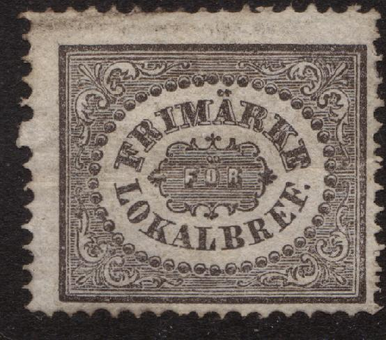
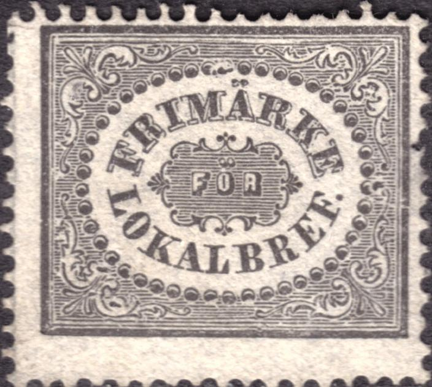
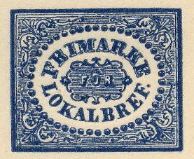
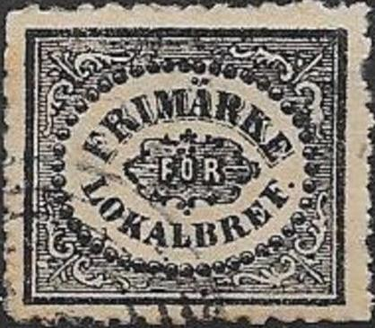
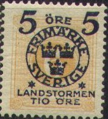
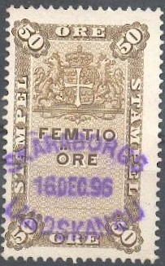

{kind=link}


Return To Catalogue - Sweden 1855-1884 - Local issues overview (bypost)
Note: on my website many of the
pictures can not be seen! They are of course present in the
catalogue;
contact me if you want to purchase it.
(1 Sk) black (3 o) olive
These stamps should have perforation 14.
Value of the stamps |
|||
vc = very common c = common * = not so common ** = uncommon |
*** = very uncommon R = rare RR = very rare RRR = extremely rare |
||
| Value | Unused | Used | Remarks |
| 1 Sk | *** | *** | |
| 3 o | R | R | |
Note the typical star cancel on the following stamp:

Reprints exist of both stamps. The reprints can most often be distinguished by studying the center of the right border wich is usually distorted in different ways on the reprints (broken, ring or color dot). Information obtained thanks to Lasse Hult.

Reprint?

I've been told that this is a reprint with forged cancel.
However, the design is considerably different from the stamps
shown above. It is therefore more likely a forgery.
Forgeries also exist (Fournier offers both of them for 2 Swiss Francs in his 1914 pricelist as first choice forgeries and at least 4 other types of forgeries exist).
(Two forgeries, note that they don't have dots on the 'A' of
'FRIMARKE')
Probably two forgeries with much wider perforation.
If anybody posesses more information concerning these forgeries, please contact me!

Fournier forgery, printed in blue taken from 'The Fournier Album
of Philatelic Forgeries'. This forgery was probably only used to
illustrate Fournier's pricelist and not to deceive collectors.

Very dubious stamps.


For more local issues see Bypost stamps.


1 o black 3 o red 5 o brown 6 o yellow 12 o red 20 o blue 24 o violet 30 o green 50 o brown 1 Kr blue and brown
These stamps are perforated 14 or 13 (after 1877).
Value of the stamps |
|||
vc = very common c = common * = not so common ** = uncommon |
*** = very uncommon R = rare RR = very rare RRR = extremely rare |
||
| Value | Unused | Used | Remarks |
| 1 o | c | c | |
| 3 o | c | c | |
| 5 o | c | c | |
| 6 o | c | c | |
| 12 o | c | * | |
| 20 o | c | c | |
| 24 o | * | * | |
| 30 o | c | c | |
| 50 o | c | c | |
| 1 K | ** | * | |
Overprinted 'FRIMARKE LANDSTORMEN FRIMARKE' (War issue, 1916)

5 o + 5 o on 1 o black 5 o + 5 o on 3 o red 5 o + 5 o on 5 o brown 5 o + 10 o on 6 o yellow 5 o + 15 o on 12 o red 10 o + 20 o on 20 o blue 10 o + 40 o on 24 o violet 10 o + 20 o on 30 o green 10 o + 40 o on 50 o brown 10 o + 90 o on 1 K blue and brown
Value of the stamps |
|||
vc = very common c = common * = not so common ** = uncommon |
*** = very uncommon R = rare RR = very rare RRR = extremely rare |
||
| Value | Unused | Used | Remarks |
| 5 o + 5 o on 1 o | * | * | |
| 5 o + 5 o on 3 o | * | * | |
| 5 o + 5 o on 5 o | * | * | |
| 5 o + 10 o on 6 o | * | * | |
| 5 o + 15 o on 12 o | * | * | |
| 10 o + 20 o on 20 o | * | * | |
| 10 o + 40 o on 24 o | ** | ** | |
| 10 o + 20 o on 30 o | * | * | |
| 10 o + 40 o on 50 o | ** | ** | |
| 10 o + 90 o on 1 K | R | R | |
2 o orange (1889) 3 o brown 4 o grey 5 o green 6 o grey 10 o red 12 o blue 20 o red 20 o blue (1893) 24 o yellow 30 o brown 50 o red 50 o grey (1893) 1 Kr blue and brown
These stamps are perforated 14 or 13 (after 1877).
Value of the stamps |
|||
vc = very common c = common * = not so common ** = uncommon |
*** = very uncommon R = rare RR = very rare RRR = extremely rare |
||
| Value | Unused | Used | Remarks |
| 2 o | c | c | Perforation 13 only |
| 3 o | c | c | |
| 4 o | c | c | |
| 5 o | c | vc | |
| 6 o | ** | ** | |
| 10 o | c | vc | |
| 12 o | * | * | |
| 20 o red | * | c | |
| 20 o blue | * | vc | Perforated 13 only |
| 24 o | ** | * | |
| 30 o | * | vc | |
| 50 o red | ** | * | |
| 50 o grey | * | c | |
| 1 K | * | c | |
Overprinted with crown in blue

10 o on 12 o blue 10 o on 24 o yellow
Value of the stamps |
|||
vc = very common c = common * = not so common ** = uncommon |
*** = very uncommon R = rare RR = very rare RRR = extremely rare |
||
| Value | Unused | Used | Remarks |
| 10 o on 12 o | * | * | Perforation 13 only |
| 10 o on 24 o | ** | ** | Perforation 13 only |
Some modern forgeries, created with a scanner and printer (probably) were made by a forger from Hialeah (Florida), they are often referred to as Hialeah forgeries. Most of the details are very poor and the sizes are incorrect. I have seen the values 6 o, 30 o and 1 Kr.
(Hialeah forgeries, reduced sizes)


Fournier forgeries of the 10 o stamp in blue; these forgeries
were probably only used to illustrate Fournier's pricelist and
not to deceive collectors. They can be found in 'The Fournier
Album of Philatelic Forgeries'.
The forger Sperati seems to have forged the 10 ore overprint (probably to generate rare inverted overprints or overprints on perforation 14 stamps). According to the BPA book, not much information is available on the recognition of these forged overprints.
Sperati 'proof'.
1 o black 2 o yellow 3 o brown (1918) 4 o violet 5 o green 7 o green (1918) 8 o red 10 o red 12 o red (1918) 15 o brown 20 o blue 25 o orange 30 o brown 35 o violet (1911) 50 o grey 1 Kr black on yellow 5 K red on yellow
These stamps have perforation 13 x 13 1/2 and watermark 'Crown' (1910) or 'Wavy lines' (1911)
Value of the stamps |
|||
vc = very common c = common * = not so common ** = uncommon |
*** = very uncommon R = rare RR = very rare RRR = extremely rare |
||
| Value | Unused | Used | Remarks |
| Watermark 'Crown' | |||
| 1 o | c | vc | |
| 2 o | c | c | |
| 4 o | c | c | |
| 5 o | c | vc | |
| 8 o | c | c | |
| 10 o | c | vc | |
| 15 o | c | c | |
| 20 o | * | vc | |
| 25 o | * | c | |
| 30 o | * | vc | |
| 50 o | * | c | |
| 1 K | * | * | |
| 5 K | *** | * | |
| With watermark 'Wavy lines' | |||
| 1 o | c | c | |
| 2 o | c | c | |
| 3 o | c | c | |
| 4 o | c | c | |
| 5 o | c | vc | |
| 7 o | c | c | |
| 8 o | ** | ** | |
| 10 o | c | vc | |
| 12 o | c | c | |
| 15 o | c | vc | |
| 20 o | * | vc | |
| 25 o | * | vc | |
| 30 o | * | vc | |
| 35 o | * | vc | |
| 50 o | * | c | |
Airmail stamps, overprinted 'LUFTPOST'

10 on 3 o brown 20 on 2 o yellow 50 on 4 o violet
In 1920 the values some values were overprinted 'LUFTPOST' to serve as airmail stamps. Some very rare inverted overprints exist of these stamps (RRR). By the way these misprints have been forged, I have seen some modern Hialeah forgeries (stamp and overprint forged), made with a computer scanner and printer.
Value of the stamps |
|||
vc = very common c = common * = not so common ** = uncommon |
*** = very uncommon R = rare RR = very rare RRR = extremely rare |
||
| Value | Unused | Used | Remarks |
| Watermark 'Crown' | |||
| 20 o on 2 o | RRR | RRR | |
| 50 o on 4 o | RR | RR | |
| Watermark 'Wavy Lines' | |||
| 10 o on 3 o | * | * | |
| 20 o on 2 o | ** | ** | |
| 50 o on 4 o | *** | *** | |
Examples, inscription 'KONGL. TELEGRAFVERKET' or 'KUNGL. TELEGRAFVERKET', arms in the middle with electrical sparks:
I have no further information concerning these stamps.
Examples:
(1881 issue)
In the above design were issued in 1881: 10 o, 15 o, 20 o, 25 o, 30 o, 40 o, 50 o, 60 o, 75 o (all in brown), 1 K, 2 K, 3 K, 4 K, 5 K, 6 K, 7 K, 8 K, 9 K, 10 K, 15 K, 20 K, 25 K (all in red), 50 K, 75 K, 100 K, 200 K and 500 K (all in blue). Some overprints seem to exist (made in 1910): 5 o on 75 o, 20 o on 75 o and 30 o on 75 o.

This design was issued in 1895; the following values exist: 20 o, 25 o, 30 o ,40 o, 50 o, 60 o, 80 o (all in brown), 1 K, 1.20 K, 1.50 K, 2 K, 3 K, 4 K, 5 K, 6 K, 7 K, 8 K, 9 K, 10 K, 12 K, 12.5 K, 15 K, 20 K, 25 K, 30 K (all in red), 50 K, 75 K, 100 K, 200 K and 500 K (all in blue). Some surcharges were made in 1910: 20 s on 40 o, 20 o on 60 o and 20 o on 60 o.

"WEXEL STAMPEL" of 1864 1 Riksdaler Riksmynt violet and
black

('VEXEL STAMPEL')
The above "VEXEL STAMPEL" was issued in 1887 in only 1 value: 1 K blue and black.
Literature: 'Scandinavia Revenues European Philately 14' by J.Barefoot Ltd, 52 pages (I haven't seen this book myself).
(Reduced sizes)
I have also seen a value 6 (SEX) o lilac, 10 (TIO) o red. The 2 (TVA) o seems to be only for local envelopes.
(Official postcard; 'Tjenstebrefkort', 6 o brown posthorn)

(-) blue
A similar stamp seems to exist in black on yellow, but without the inscription 'FALTPOST'. It was issued in 1929.

Colour: green
"OSTRA CENTRALBANEN 10 Kg." "60" on 70 o blue
{kind=link}
{kind=link}
{kind=link}